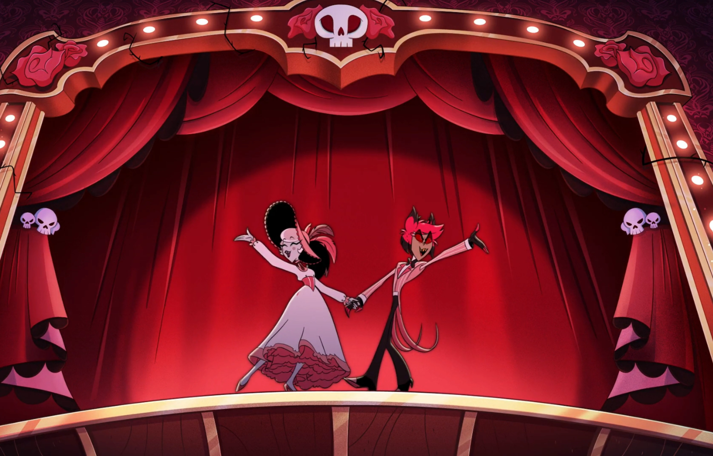
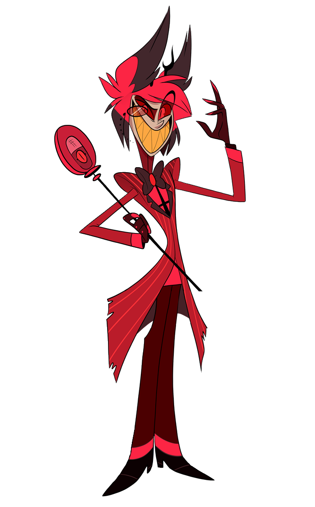
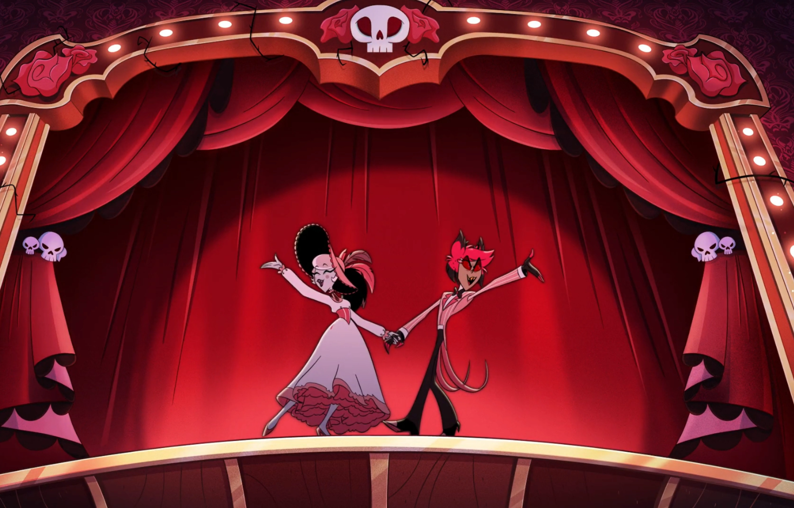
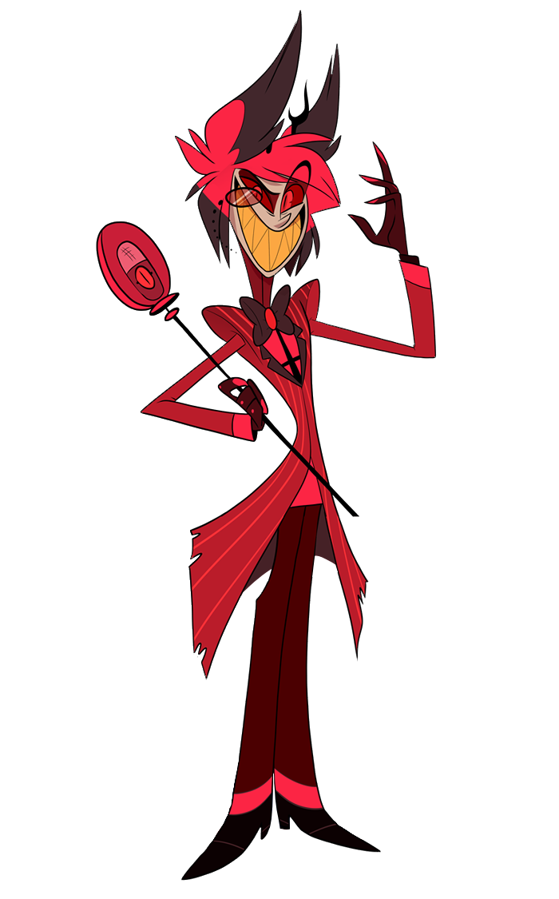

⛧ Alastor je jeden z nejmocnějších démonů v Pekle. Spíše než protagonista je manipulativním antihrdinou, který koná hlavně pro vlastní profit. Pomáhá s řízením Hazbin Hotelu, avšak pouze proto, že se nudí a chce rozptýlení. Ve smysl Hotelu nevěří. Před svou smrtí byl moderátorem v rádiu v New Orleans, přičemž noci trávil vražděním lidí. Zemřel, když si ho při schovávání mrtvoly lovec spletl s jelenem a zastřelil. Uzavřel dohodu s mocnou démonkou Rosie, která mu poskytla sílu a moc výměnou za jeho duši. Poté sám uzavřel dohody s dušemi Niffty a Huska, jejichž majitelem nyní je. Alastor byl dříve obdivován Voxem, který ho také požádal o spolupráci. Jenže ostrým odmítnutím Voxe naštval a ten je nyní posedlý snahou Alastora porazit. Alastor je moje nejoblíbenější postava, nejen kvůli své osobnosti a příběhu, ale i nápaditému designu.
⛧ Zajímavost: Kdykoliv mluví, jeho hlas zní jako z rádia. Má takový konstantní voice filter a je to super!
⛧ Více informací zde!